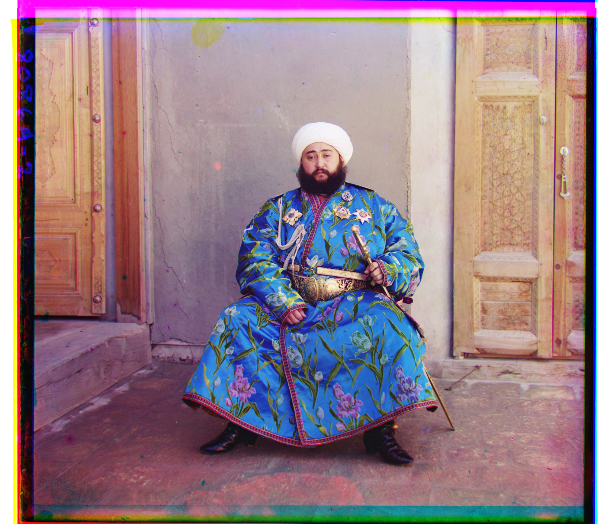

Project 1 — Colorizing Prokudin–Gorskii
Overview. Colorized historical glass-plate scans by aligning B/G channels to R and composing an RGB image.
Before & After Demo (Single Scale)


Before & After Demo (Multiple Scale)

Before & After Demo (Multiple Scale + Canny)

Results
Notes
- Click any image to view a larger version.
- Filenames map directly from the spec’s sample set (e.g.,
cathedral,monastery,tobolsk).